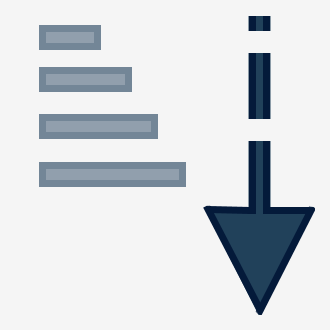
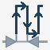
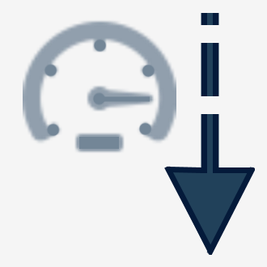

La pagina di scavo permette di eseguire uno scavo di forma rettangolare con raccordi e fondo piano.
Per questa lavorazione è necessario utilizzare una fresa adeguata, da montare sul mandrino principale.
Come livello per il fondo viene considerato il “livello banco”.
Il ciclo prevede la modalità a passate con ingresso elicoidale al centro e distanza passate impostabile da parametri.

Parametri
X | |
 | Y |
Raccordo R | |
 | Profondità dello scavo |
 | Passo Z |
 | Distanza Passate |
Incremento di profondità in ingresso  | |
 | Velocità Lavoro |
 | Velocità Discesa |
 | Azzeramento Assi X e Y  La posizione viene presa posizionando il centro fresa nel punto indicato. |
Esecuzione della lavorazione
Inserire le misure X, Y, ed R che caratterizzano la forma dello scavo rettangolare che si vuole ottenere.
Verificare la correttezza dei dati relativi all’utensile, in particolare il diametro.
Sono disponibili le due seguenti modalità di esecuzione
Modalità Raggiungimento scavo fino a quota banco
Per eseguire correttamente uno scavo, è necessario posizionare il centro della macchina nel punto di origine dello scavo, come mostrato nella figura presente nel capitolo precedente. Questo assicura che l’intera lavorazione si sviluppi correttamente rispetto all’area designata.
Successivamente, si procede con l’impostazione delle misure caratteristiche della forma dello scavo che si intende effettuare.
Prima di avviare la lavorazione, è fondamentale verificare l’esattezza dei dati dell’utensile selezionato, con particolare attenzione al diametro, in quanto esso influisce direttamente sulla precisione e sulla qualità dello scavo.
L’acquisizione della “quota banco” va effettuata riferendosi al livello del fondo dello scavo. Per determinarla correttamente, ci si posiziona sul bordo superiore del materiale e si azzera la quota Z. Da lì, si effettua uno spostamento verso il basso pari alla profondità desiderata dello scavo. A questo punto si può acquisire la quota banco tramite l’apposito pulsante. In presenza di utensili tipo fresa, si consiglia di compiere questa operazione con l’asse A posizionato a 90_, così da evitare imprecisioni dovute alla lunghezza effettiva dell’utensile.
Una volta definita la quota banco, si procede all’azzeramento degli assi X e Y. Questo si effettua premendo il relativo tasto di reset, posizionando il centro della fresa esattamente nel punto indicato in figura mediante il simbolo di riferimento. Nelle macchine dotate di laser puntatore, è possibile acquisire il punto zero in X e Y utilizzando direttamente il riferimento fornito dal laser.
La profondità dello scavo dipende direttamente dal livello impostato come quota banco e dalla posizione dell’asse Z al momento dell’avvio del ciclo, tramite il pulsante “Start ciclo”. La lavorazione avviene mediante un ingresso elicoidale al centro, fino alla profondità specificata nel parametro “Passo in Z”. Successivamente, l’area viene svuotata con un movimento concentrico, seguendo la distanza impostata nei parametri di lavorazione.
Gli spostamenti della macchina necessari per raggiungere la posizione iniziale avvengono alla cosiddetta “quota di svincolo”, che può essere definita nei parametri utensile. Questo assicura che l’utensile non interferisca con eventuali ostacoli durante i movimenti di posizionamento.
Modalità Posizionamento sopra il pezzo e azzeramento del valore origine
Questa modalità prevede l’impostazione e il successivo impiego del parametro: ”Profondità dello scavo”